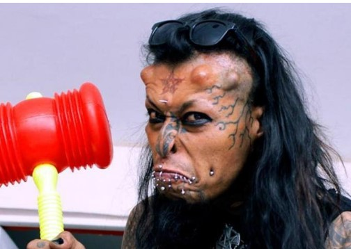
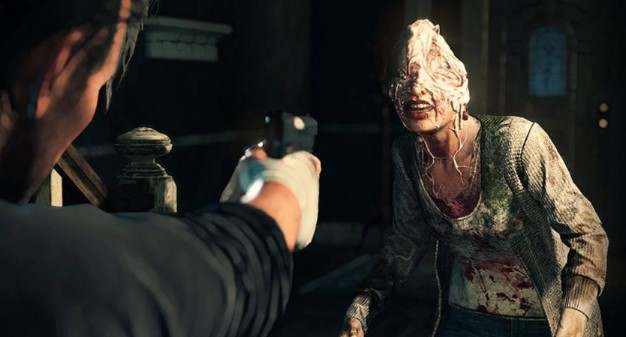
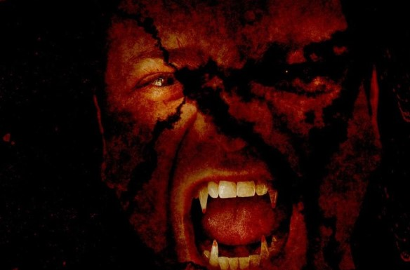
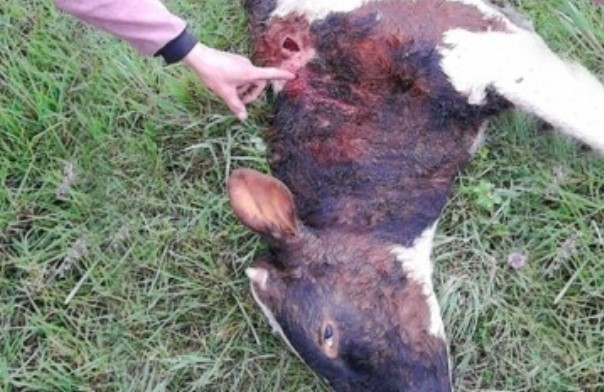

El Diablo Caim

Desde los 13 años, busca con implantes, perforaciones y cirugías ser reconocido como Lucifer.
aím Mortiis es un bogotano de 42 años que busca convertirse en el ‘diablo colombiano’. Para ello,
ha asumido en su cuerpo un sinnúmero de modificaciones y operaciones que asustan o asombran a más
de uno que se lo cruza en la calle, lo ve en televisión o por redes sociales.
Hoy ya no quedan rastros de su nombre real o de la apariencia física con la que nació. Su
transformación comenzó a los 13 años, cuando decidió tatuarse una figura de cabro en la espalda.
Desde entonces no ha cesado su proceso.
Su rostro está cubierto de tatuajes; sus labios, uñas y hasta los ojos los tiene pintados de negro
y tiene perforaciones en las orejas, cejas, tetillas y manos. A los 27 años, zanjó su lengua en dos
para tener la apariencia de un reptil, y se colocó implantes subdermales (bajo la piel) para que
pareciera que le salían cachos de la frente.
Inicialmente usó unos ‘cuernos’ de 15 milímetros de largo hechos de acero quirúrgico. Sin embargo,
luego de muchos cambios decidió optar por unos de 30 milímetros, que hoy lo acompañan en su aspecto
luciferino.
Juegos Para Halloween

La semana final de octubre se llena de disfraces, fiestas y decoración, pero no a todos les anima
mucho encontrarse con multitudes en las calles y centros comerciales.
Para todos aquellos que prefieran celebrar el 31 de octubre jugando en la comodidad de sus hogares,
existen siete juegos que dan miedo y que pueden disfrutar en esta temporada de Halloween.
Sin importar si ya son fanáticos del terror o si simplemente quieren poner a prueba su valentía, el
formato ‘survival horror’ promete escenarios oscuros, con enemigos macabros y visiones
distorsionadas en donde el usuario debe pensar en resolver problemas, entender pistas y escapar o
rescatar a otros personajes.
Terror en el Cementerio Central
Hay quienes cuentan de 'espíritus' que aparecen en las madrugadas y de cultos a los muertos.
La historia dice que se trata de un hombre con un largo vestido blanco que camina lento por los laberintos lúgubres y
silenciosos del Cementerio Central de Bogotá. Recorre las esquinas, su halo se enciende y se apaga en las madrugadas
brumosas de la capital. Quienes aseguran haberlo han visto dicen que es el Barón de este camposanto, un viejo monje que
es el custodio de las almas en pena que aseguran hay allí.
Esa es apenas una de las historias que cuentan quienes frecuentan o trabajan en el Cementerio Central de Bogotá, y que
en vísperas de Halloween se narran a diario en los caminos del camposanto más antiguo de la capital, abierto en 1836.
Origen del Vampiro

Las criaturas vampíricas, de colmillos afilados y que se dedican a alimentarse de la sangre ajena son figuras que han
poblado el folclore popular europeo desde hace siglos.
Aunque la leyenda de Drácula es una creación del escritor Irlandés Bram Stoker, lo cierto es que esta figura está
basada en un personaje que existió de verdad.
Su nombre era Vlad Tepes, apodado “el empalador”, que vivió en Rumanía en el siglo XV. Su apodo hace honor a su
actividad favorita, pero su crueldad también pasaba por el estrangulamiento, el vaciado de los ojos, la amputación de
miembros o la castración.
Este personaje pasó a la historia por su crueldad como uno de los grandes símbolos del género de terror.
Volvio el Chupa Cabras

Este martes, varios ganaderos de Chocontá, municipio limítrofe con Cucunubá (Provincia de Ubaté) Cundinamarca, se
encontraron con la ingrata sorpresa de ver sus vacas agonizando producto de un feroz ataque por parte de un ‘animal’ al
que aún no identifican.
Habitantes de esta región se comunicaron con EXTRA para recordar que se podría tratar del famoso ‘chupacabras’, aquel
mismo que en el año 2016 e incluso inicios del 2017, sembró el terror en los ganaderos de la provincia de Ubaté, e
incluso algunos municipios de la provincia de Occidente de Boyacá como San Miguel de Sema y Caldas.
Jesús Casas es uno de los ganaderos de Chocontá quien indicó que al llegar al lote donde pastaban sus vacas encontró a
dos de estas heridas en la cabeza. No obstante al transcurrir del día fueron muriendo, “al parecer no tenían sangre.
Los semovientes tienen varias heridas en el rostro, pero el resto de su cuerpo estaba intacto”.
Casas no sale del asombro y del ‘guayabo’ de ver a sus animales muertos. Explicó que le causa miedo que los o el
asesino regrese y le acabe con los que le quedaron, o en el peor de los casos ataque a su familia.